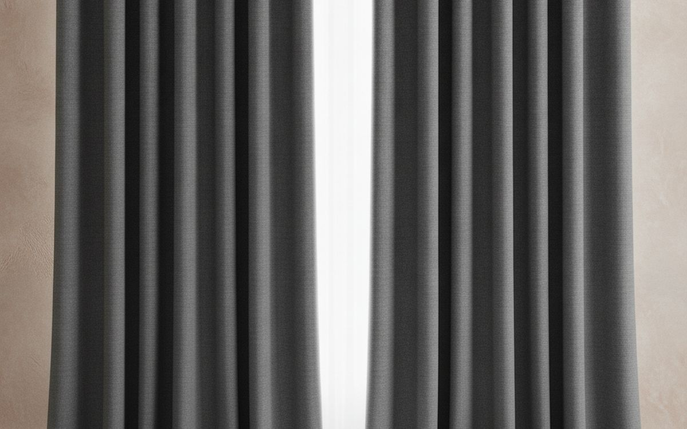
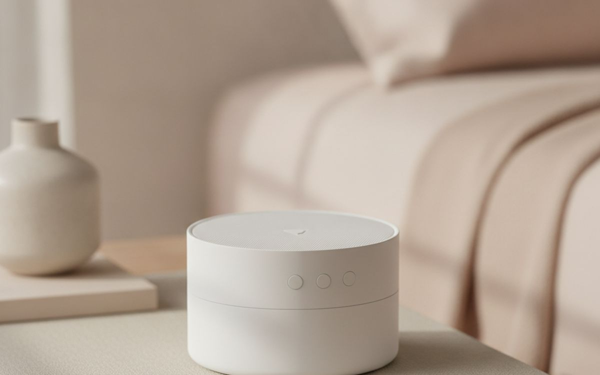
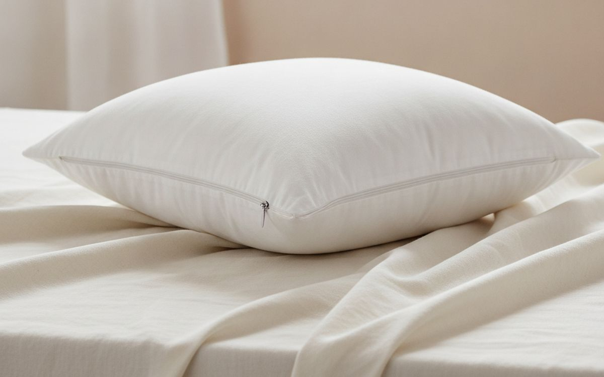
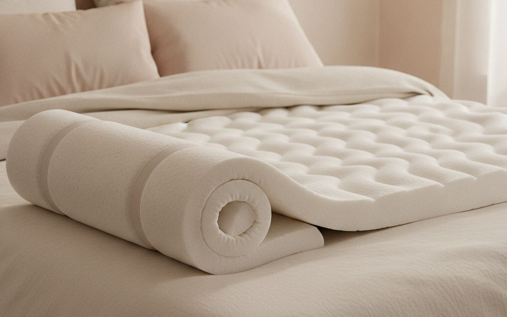
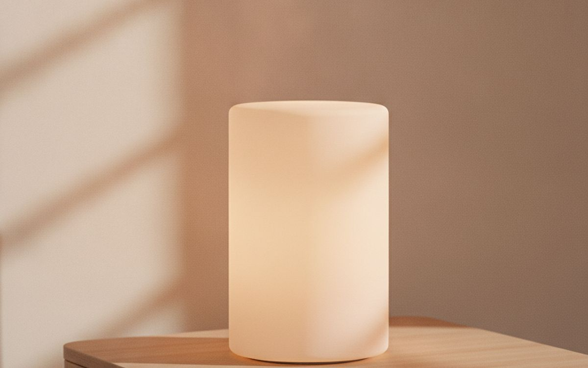
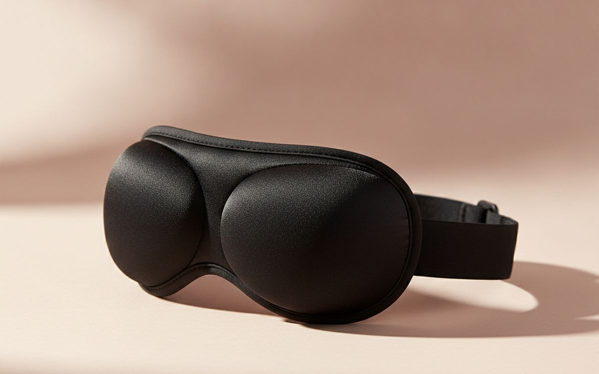
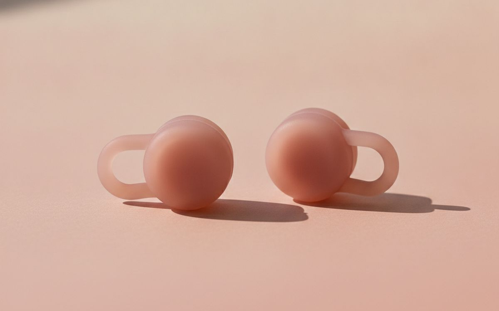
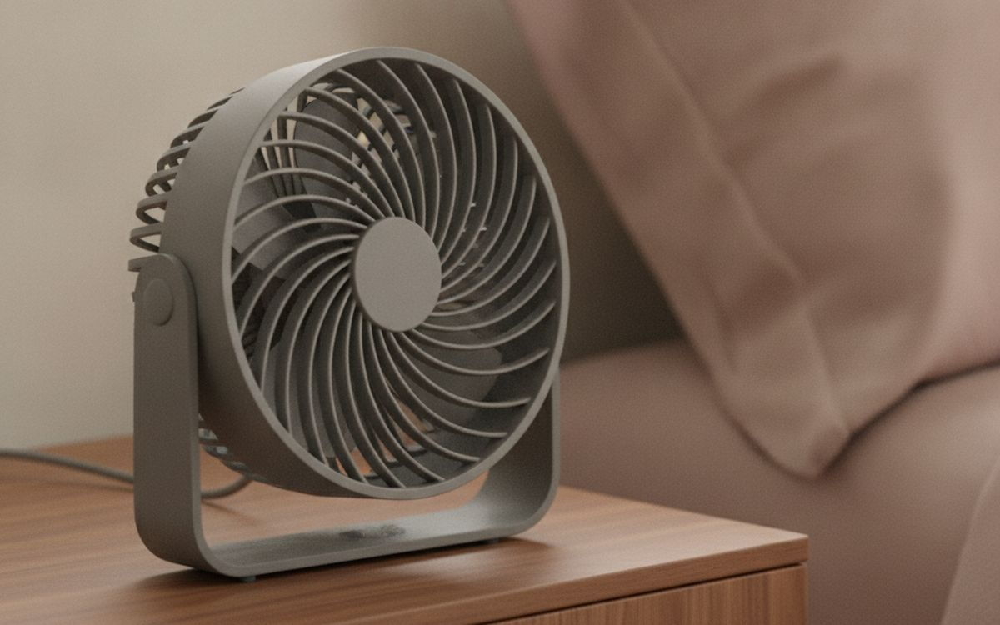
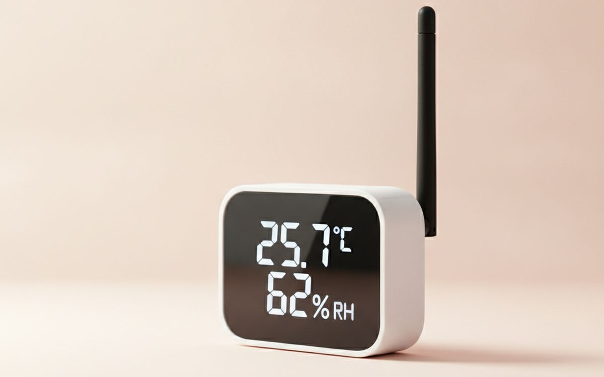
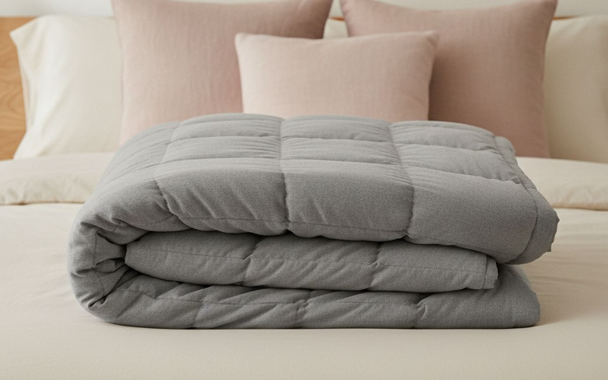

The market for sleep products is crowded with gadgets and supplements promising quick fixes. Many of these offer little tangible benefit, focusing on tracking data that is often inaccurate or providing solutions for problems that do not exist. Improving sleep effectively means looking at the fundamentals: your sleep environment, daily habits, and understanding what genuinely supports your body’s natural rest cycles. It’s about creating conditions that make it easier for your brain and body to wind down and stay asleep.
Instead of chasing unverified claims or relying on technology to tell you if you slept well, focus on measurable improvements. This guide prioritizes products that directly address common sleep disruptors: light, sound, temperature, and physical comfort. These are the elements proven to influence sleep quality. The goal is to build a restful sanctuary that works with your biology, not against it, allowing you to achieve more consistent and restorative sleep without overcomplicating the process.
The short version
Nicetown Blackout Curtains
For blocking all light
Disclosure. The links on this page are affiliate links. If you buy through one we may earn a commission at no extra cost to you. It does not affect what makes this list or the order it is in.
How we picked
Our recommendations are based on widely accepted principles of sleep hygiene and the known mechanisms of how certain products affect the sleep environment. We evaluate products for their stated purpose, public consensus on effectiveness, and design considerations that contribute to comfort and longevity. We do not conduct hands-on reviews or product testing. This selection focuses on practical, non-pharmaceutical solutions that address common barriers to good sleep, informed by publicly available information and expert opinion on sleep science.
At a glance
Prices are approximate at the time of writing and change often.
The picks

01 · For blocking all lightNicetown Blackout Curtains
Light pollution from outside can disrupt sleep cycles, even if you keep your eyes closed. Streetlights, passing car headlights, or early morning sun can all interfere with the body's natural melatonin production. Blackout curtains are a direct, effective solution to this problem, creating a genuinely dark environment. They work by incorporating a dense, opaque layer, often a triple-weave fabric, that blocks nearly all incoming light. This physical barrier ensures that your brain registers darkness, which is crucial for signalling the body to prepare for and maintain sleep. Beyond light, many models also offer some degree of thermal insulation, helping to keep the room cooler in summer and warmer in winter, which can further contribute to a comfortable sleep environment by reducing drafts and temperature fluctuations. They are a foundational element for anyone serious about improving their sleep quality, offering a tangible improvement without complex technology. You measure your window frame and choose a size that extends beyond it by several inches to prevent light leakage around the edges, opting for a darker color for maximum effectiveness.
$30-70Trade-off: Can make a room very dark during the day
Why it is here
- Blocks nearly all external light effectively
- Offers some thermal insulation benefits
- Relatively inexpensive for the impact
Worth knowing
- Can make a room very dark during the day
- Requires careful sizing for full effectiveness

02 · To mask disruptive soundsLectroFan EVO
Unwanted noise, whether from street traffic, noisy neighbors, or even a snoring partner, can fragment sleep and make it harder to fall asleep in the first place. A dedicated white noise machine like the LectroFan EVO provides a consistent, non-looping sound that effectively masks these sudden disruptions. Unlike apps on your phone, a physical machine offers dedicated sound profiles and avoids notifications or screen light. The EVO model specifically offers 20 different sounds, including fan noises, white, pink, and brown noise, plus ocean sounds, giving you options to find what best suits your preference for steady, unobtrusive background sound. Its adaptive sound technology aims for a continuous, natural-sounding audio experience, which helps prevent the brain from focusing on disruptive external noises. This consistent ambient sound creates a more stable auditory environment, allowing you to relax and maintain sleep without being jolted awake by unexpected disturbances.
$50-70Trade-off: Requires a power outlet
Why it is here
- Provides non-looping, consistent sound
- Multiple sound options including fan and noise types
- Masks sudden noises effectively
Worth knowing
- Requires a power outlet
- Some users may find consistent sound distracting

03 · Customizable support for your neckCoop Home Goods Original Pillow
A comfortable and supportive pillow is crucial for maintaining proper spinal alignment throughout the night, reducing neck pain and improving overall sleep quality. The Coop Home Goods Original Pillow stands out because it uses shredded memory foam, which allows you to customize the pillow's loft and firmness by adding or removing filling. This adjustability is a significant advantage, as individual preferences for pillow height vary greatly depending on sleep position and body type. Side sleepers often need a higher loft, while back sleepers prefer something in the middle, and stomach sleepers typically require a flatter profile. The blend of memory foam and microfiber offers a balance of soft comfort and firm support, conforming to the head and neck without sinking completely. Investing in a pillow that can be tailored to your specific needs can make a noticeable difference in comfort and how rested you feel in the morning, far more than generic options.
$70-100Trade-off: Requires some effort to adjust to preferred fill level
Why it is here
- Adjustable fill allows for custom loft and firmness
- Provides good support for various sleep positions
- Hypoallergenic materials
Worth knowing
- Requires some effort to adjust to preferred fill level
- Memory foam can have a slight initial odor

04 · To add comfort to a mattressLucid 3-inch Gel Memory Foam Mattress Topper
If your current mattress isn't providing adequate comfort or support but you're not ready to replace it entirely, a mattress topper can offer a significant upgrade. The Lucid 3-inch Gel Memory Foam Mattress Topper adds a substantial layer of plushness and pressure relief. Memory foam contours to your body, distributing weight evenly and alleviating pressure points, which can reduce tossing and turning. The "gel-infused" aspect helps dissipate body heat, addressing a common complaint about traditional memory foam retaining warmth. This topper is a relatively inexpensive way to soften a firm mattress or add new life to an aging one, providing a noticeable improvement in surface comfort. It changes the feel of your bed without the high cost of a new mattress. Choosing the right thickness, like this 3-inch model, offers a good balance between soft cushioning and retaining some of the underlying mattress support.
$80-150Trade-off: Can make the bed feel softer than some prefer
Why it is here
- Adds significant comfort and pressure relief
- Gel infusion helps with temperature regulation
- Extends the life and feel of an older mattress
Worth knowing
- Can make the bed feel softer than some prefer
- Memory foam can have an off-gassing odor initially

05 · Warm light for winding downCasper Glow Light
Bedside lighting, when chosen carefully, can support healthier sleep habits by influencing your body's natural circadian rhythm. The Casper Glow Light is designed not just to illuminate but to help you wind down before bed and wake up gently. It emits a warm, soft light that gradually dims over a set period, signalling to your brain that it's time to prepare for sleep by reducing exposure to stimulating blue light. Its simple twist-to-dim interface makes it easy to adjust the brightness without fumbling for switches in the dark. In the morning, it can be set to gently brighten, mimicking a sunrise, which can lead to a more pleasant awakening than a jarring alarm. This type of lighting encourages the natural production of melatonin in the evening and helps suppress it in the morning, working with your body's clock rather than against it. It's a purposeful light source for the bedroom.
$100-130Trade-off: Higher price point for a bedside lamp
Why it is here
- Emits warm, dimmable light ideal for evening
- Gentle wake-up and wind-down features
- Simple, intuitive controls
Worth knowing
- Higher price point for a bedside lamp
- Requires charging

06 · Blocks light, no eye pressureManta Sleep Mask
Even with blackout curtains, some ambient light can still seep into a bedroom, or you might need to sleep in a brightly lit environment while traveling. A high-quality sleep mask can provide a personal, portable solution for complete darkness. The Manta Sleep Mask is notable for its adjustable, eye-cup design, which prevents pressure on the eyelids and allows for full eye movement during REM sleep. This design ensures that the mask blocks light effectively around the nose and temples, areas where many standard masks fail. The modular construction means you can adjust the position of the eye cups for a custom fit, preventing light leakage and maximizing comfort. It’s a simple, non-electronic device that gives you control over your light exposure, whether at home or in unfamiliar surroundings, offering a tangible improvement for those sensitive to even faint light.
$30-40Trade-off: Can feel bulky to some users
Why it is here
- Provides complete darkness without eye pressure
- Adjustable eye cups for custom fit
- Effective for travel or imperfect home darkness
Worth knowing
- Can feel bulky to some users
- Requires occasional hand washing

07 · For quiet and comfortLoop Quiet Earplugs
For those sensitive to noise or in environments where a white noise machine isn't enough or isn't practical, earplugs offer a direct and effective way to reduce sound intrusion. Loop Quiet earplugs are designed to be comfortable for extended wear, particularly for sleeping. They achieve a significant noise reduction rating (NRR) without completely blocking out all sound, which can be disorienting. Their unique circular shape and soft silicone material are intended to sit securely and comfortably in the ear canal, minimizing discomfort that can arise from traditional foam earplugs. They come with different tip sizes to ensure a proper seal for various ear anatomies. These earplugs are a simple, non-electronic solution for creating a quieter sleep environment, whether to muffle a partner's snoring, block out street noise, or provide quiet for light sleepers in any setting.
$20-30Trade-off: May take time to find the correct tip size for best fit
Why it is here
- Comfortable for side sleepers and extended wear
- Reduces noise without complete isolation
- Reusable and easy to clean
Worth knowing
- May take time to find the correct tip size for best fit
- Still allows some very loud noises to be heard

08 · For room temperature and airflowVornado 630 Air Circulator Fan
Maintaining a cool and consistent bedroom temperature is critical for good sleep, as our bodies naturally drop in temperature when preparing for rest. A good fan, like the Vornado 630, doesn't just push air around; it circulates it throughout the entire room, creating a more uniform temperature and preventing hot spots. This model uses Vornado's signature vortex action to move air efficiently across greater distances, rather than just directly in front of it. Beyond cooling, the gentle whir of a fan can also provide a subtle, consistent white noise effect, masking other disruptive sounds without being overpowering. It's an energy-efficient way to achieve a comfortable thermal environment, especially during warmer months, and the constant air movement can also help prevent stuffiness. This contributes to a feeling of freshness, which can make falling and staying asleep easier.
$60-80Trade-off: Can be noisy on higher settings
Why it is here
- Circulates air for even room temperature
- Provides subtle white noise effect
- Energy-efficient cooling solution
Worth knowing
- Can be noisy on higher settings
- Requires regular cleaning of fan blades

09 · Monitor bedroom conditions accuratelyGovee H5075 Bluetooth Hygrometer Thermometer
The humidity and temperature in your bedroom can significantly affect your comfort and sleep quality, often without you realizing it. Air that is too dry can irritate nasal passages, while overly humid air can feel stuffy and promote mold growth. A simple device like the Govee H5075 Bluetooth Hygrometer Thermometer provides accurate, real-time data on both factors. Knowing the exact conditions allows you to make informed adjustments, such as turning on a humidifier or dehumidifier, or adjusting your thermostat. Its Bluetooth connectivity means you can check readings on your phone without needing to be in the room, making it easy to monitor trends. This gadget isn't about actively changing the environment itself, but rather giving you the information needed to create an optimal one. It removes guesswork, letting you respond to measurable data for better sleep.
$15-25Trade-off: Does not actively change environment, only monitors
Why it is here
- Provides accurate, real-time temperature and humidity data
- Bluetooth connectivity for remote monitoring
- Affordable way to identify environmental issues
Worth knowing
- Does not actively change environment, only monitors
- Requires a phone app for full data history

10 · For deep pressure comfortGravity Blanket Original Weighted Blanket
Some people find comfort and improved sleep from the gentle, even pressure of a weighted blanket. The Gravity Blanket Original is one of the more recognized options, designed to provide "deep pressure stimulation." While the scientific evidence is still developing, many users report a calming effect, feeling more secure and relaxed, which can help reduce restlessness and make it easier to fall asleep. The blanket is typically filled with glass beads distributed in quilted compartments to ensure uniform weight distribution across the body. It’s important to choose a blanket that is roughly 10% of your body weight for optimal effect. This physical sensation of being swaddled can be particularly beneficial for those who experience anxiety or have trouble settling down at night, offering a non-medicinal approach to improving sleep initiation and quality for a specific user group.
$150-250Trade-off: Can be heavy and difficult to move
Why it is here
- Provides comforting deep pressure stimulation for some
- Can help reduce restlessness and anxiety at bedtime
- Even weight distribution across the body
Worth knowing
- Can be heavy and difficult to move
- May feel too warm for some sleepers
Common questions
Should I buy a sleep tracking gadget?
Most consumer sleep trackers, whether worn on the wrist or placed under the mattress, offer limited accuracy. They often rely on movement or heart rate to estimate sleep stages, which is not as reliable as clinical methods. While they can provide some data on sleep duration, the insights into "sleep quality" are often vague or misleading. Relying too heavily on these gadgets can also lead to "orthosomnia," where anxiety about achieving "perfect" sleep metrics actually makes sleep worse. Focus instead on creating a dark, quiet, and cool bedroom environment, and maintaining a consistent sleep schedule. Those factors have a much more tangible impact than metrics from a wristband.
What's the ideal temperature for sleep?
The ideal bedroom temperature for most adults falls between 60 and 67 degrees Fahrenheit (15.6 to 19.4 degrees Celsius). When you sleep, your body temperature naturally drops, and a cool room aids this process, signaling to your body that it's time for rest. A room that is too warm can make it difficult to fall asleep and stay asleep, leading to restlessness and night sweats. Conversely, a room that is too cold might also disrupt sleep for some, though typically less so than a warm room. Aim for the cooler end of this range for optimal comfort and to support your body's natural sleep mechanisms.
How dark should my bedroom be?
Your bedroom should be as dark as possible, ideally completely dark. Even small amounts of light, such as from streetlights, digital clock displays, or standby lights on electronics, can disrupt your body's production of melatonin, the hormone that helps regulate sleep. Melatonin production is triggered by darkness, and any light exposure, particularly blue light, can suppress it. Achieving true darkness signals to your brain that it is nighttime, promoting deeper and more restorative sleep. Use blackout curtains, an eye mask, or cover any glowing indicators to ensure your sleep environment supports your natural circadian rhythm.
Are sleep supplements effective?
Over-the-counter sleep supplements like melatonin, valerian root, or magnesium are widely available, but their effectiveness varies and is often modest. Melatonin may help regulate sleep cycles, especially for jet lag or shift work, but its impact on general insomnia is limited for many. Valerian root has some anecdotal support for relaxation, but robust scientific evidence is often inconsistent. Magnesium is essential for many bodily functions and some sleep, but a supplement is only beneficial if you have a deficiency. Always consult a doctor before starting any supplement, as they can interact with medications or have side effects. Focusing on environmental improvements and consistent habits is generally more impactful.
Today's deals
See what is discounted right now.
Deals →← All guides
We are not an Amazon Associate and earn nothing from Amazon links today. As an AliExpress affiliate we earn from qualifying purchases. Prices and availability are accurate as of the date of publication and may change.